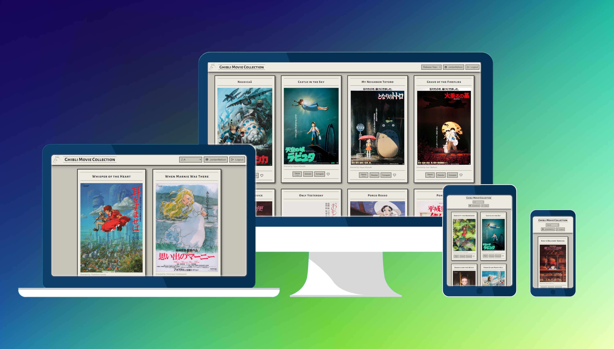
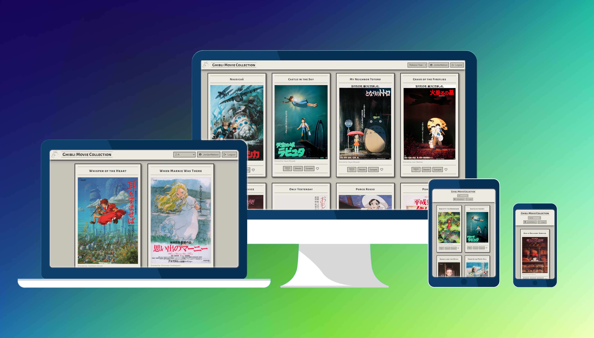

Case Study
Studio Ghibli Movie App (Angular Version)
Studio Ghibli Movie App (Angular Version)
The Studio Ghibli Movie App (Angular Version) is a vibrant, user-friendly web application designed to celebrate the rich filmography of Studio Ghibli. It serves as a digital platform where fans can explore, interact, and engage with their favorite Studio Ghibli movies.
The project was initiated to address the lack of specialized platforms for Studio Ghibli enthusiasts. It was developed as part of my academic coursework, with guidance from instructors, yet aimed at achieving professional standards akin to industry-level applications.
The primary objective was to create an intuitive, responsive, and comprehensive application that enhances the movie browsing experience for Studio Ghibli fans, with features like movie favoriting and profile customization.
The development of the app spanned over a period of two months, adhering closely to the project timeline with efficient planning and execution.
As the sole developer, I was responsible for the entire project lifecycle, from conception to deployment, with valuable inputs from my academic mentor and tutor.
The project utilized Angular (v16.2.0), TypeScript, and various Angular-specific tools like Animations, CDK, and Material. My skills in front-end development, particularly in Angular, were significantly enhanced during this project.
The project successfully met its objectives, delivering a highly responsive and feature-rich application that offers a unique platform for Studio Ghibli fans.
The integration of a custom API posed a significant challenge, requiring meticulous planning and execution to ensure smooth data handling.
In future iterations, I plan to incorporate user feedback features, such as movie ratings and reviews, and expand the movie database to include more in-depth information